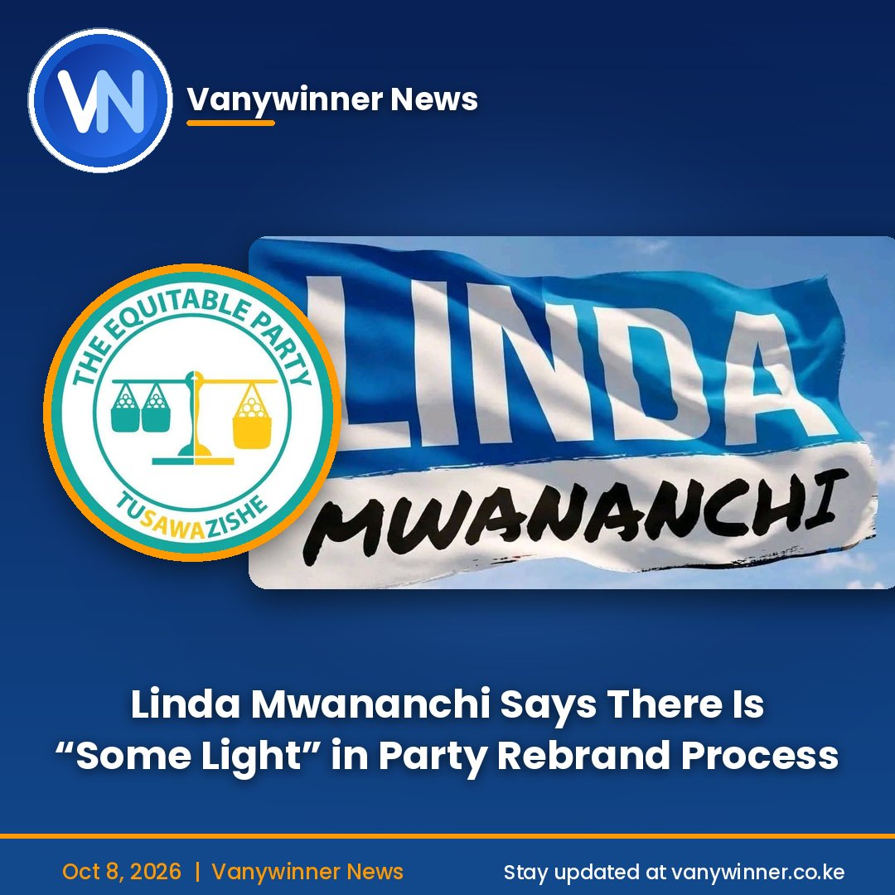

Linda Mwananchi Says There Is "Some Light" in Party Rebrand Process
News
By Newsroom | 8 October 2026
NAIROBI. The official Linda Mwananchi Facebook page has said there is "some light" in the process of rebranding The Equitable Party (TEP) into the Linda Mwananchi Movement, a sign that the movement sees progress as it works toward the 2027 General Election.
The page did not give further details in the post. It is not yet clear what specific step it was referring to, and neither the Registrar of Political Parties nor the party's top officials had publicly elaborated at the time of publishing.
How the plan came about
Nairobi Senator Edwin Sifuna was unveiled as TEP leader and presidential candidate at a launch in Nairobi on Sunday, 4 October. He said TEP had been made available to the movement as an existing political platform, after earlier efforts to set up a new party for the movement failed to produce the desired result.
At the launch, Sifuna said the party would seek to rebrand as the Linda Mwananchi Movement "in the coming days", in line with a decision by the movement's principals. TEP's National Executive Council has since approved the proposed rebrand.
The name question
The Registrar of Political Parties approved reservation of the Linda Mwananchi Movement name on 1 October, after the Political Parties Disputes Tribunal directed the office to reconsider an earlier rejection. The reservation is reported to last 90 days, during which the movement must move from a reserved name to an actual political organisation.
The name is still contested. Charles Wanyonyi has asked the Registrar to give priority to his application for "Linda Mwananchi, Party of Kenya", saying he applied on 24 February, before the application that led to the reservation.
The clock is ticking
Parties taking part in the 2027 election must submit the names and specimen signatures of their authorised officials by 15 October. That leaves Sifuna's team only days to align its officials and its proposed new identity with the electoral process.
Sifuna has said that if further hurdles block the change, the party will keep the name The Equitable Party. That means his 2027 plans don't depend on the rebrand being completed.
What the movement says it stands for
Sifuna has presented Linda Mwananchi as an alternative platform focused on farmers under economic pressure, jobless young people, small businesses facing taxes, and families struggling with education and healthcare costs. He says he wants politics built around ideas, accountability and service rather than personalities.
For now, the Linda Mwananchi page's message is a sign of optimism rather than confirmation that the rebrand is complete.